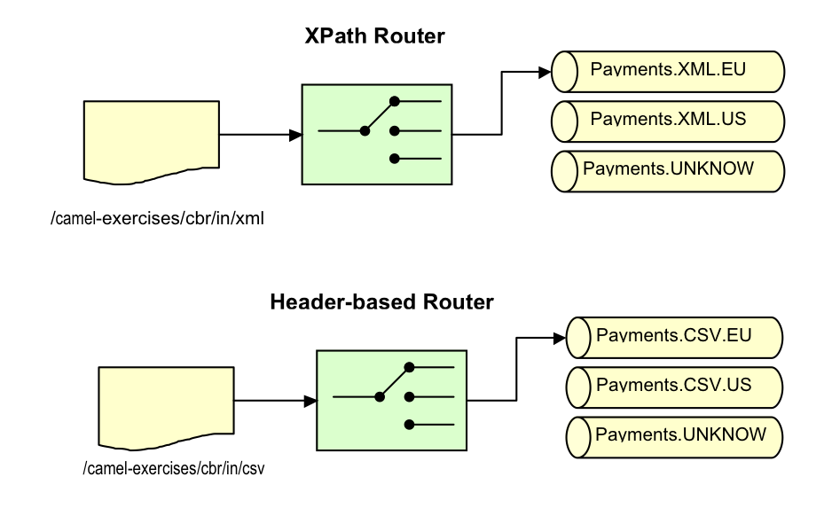

Table of Content
3. Content Based Router
In this exercise, we will build and deploy some content-based routers. The first router uses an XPath query to perform routing decisions on XML payload. The second router uses a header � containing the name of the file that initiates the route � to perform routing.

3.1 Review of Solution
The files for this exercise are located in the directory camel-exercises-cbr/. Before beginning the exercise, locate and open each of the files in the table below and preview the file as instructed.
| File | Note | Check |
| pom.xml | Look at each of the dependencies in the <dependencies> section. Do you understand why each is required? | ? |
| Examine the configuration instructions for the maven-bundle-plugin. Do you understand how the OSGi bundle is being created? | ? | |
| RouteByCurrencyRouter.java | Examine the router; do you understand the flow of control? | ? |
| Why are the InitializingBean and DisposableBean interfaces implemented? | ? | |
| RouteByFileNameRouter.java | Examine the router; do you understand the flow of control? | ? |
| bundle-context.xml | Do you understand how each route is being initialized? | ? |
| camelContext.xml | Note how this file simply includes the bundle-context.xml file. This is to allow the camel:run plugin to re-use Spring configuration while running outside of an OSGi container. | ? |
3.2 Building and Running the Solution
To build the solution use 'mvn install'; to run the solution from the command-line, use 'mvn camel:run'.
3.3 Optional: Deploying the Solution in Servicemix 4
To deploy the solution into Servicemix 4, install the 'camel-exercises-cbr' feature from the ServiceMix shell if you installed the entire exercise feature beforehand. Otherwise follow the readme.txt file.
karaf@root> features:install camel-exercises-cbr3.4 Validating the Solution
The validation here is for the deployment inside Servicemix 4 but it works the same way when started with but then you don�t need to copy any files and the output directory would be inside ./target/test-classes/camel/out directory. The XPath router listens on the directory /camel-exercises/cbr/xml/in for XML files. Copy a sample file from the ./target/test-classes/camel/in/xml directory into /camel-exercises/cbr/xml/in. It should �disappear� after a short interval, and be processed by the route and new files should appear in /camel-exercises/cbr/xml/out after a few seconds.
The header-based router listens on the directory /camel-exercises/cbr/csv/in. Copy a sample file from the ./target/test-classes/camel/in/csv directory. Again, it should 'disappear' after a short interval, and be processed by the route and new files should appear in /camel-exercises/cbr/csv/out after a few seconds.